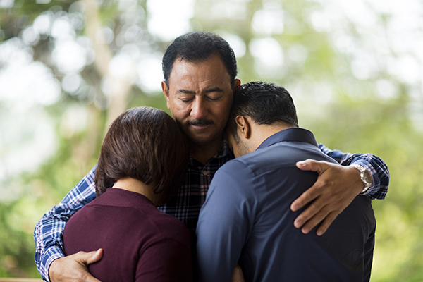

The Problem
If you're experiencing depression, anxiety, or a similar mental illness, there's a 20%-60% chance that someone in your family is too.
Many mental health illnesses are heriditary and often times go unnoticed and undiagnosed because of lack of resources, which
in turn creates lack of knowledge.
When passed down through generations, this lack of knowledge sometimes creates a chain of tolerance and other-ing of those
struggling with mental illnesses within familial units.
Our Mission
GenHealth recognizes that undiagnosed and untreated intergenerational mental health is detrimental not only to individiuals
but also families. We provide those dealing with hereditary mental illnesses the resources they need to diagnose
and treat a variety of illnesses at no cost. As a non-profit, GenHealth believes that everyone
should have fair access to health resources and that mental health is at the pinnacle of healthcare.
The Process
Before recieving any of the services provided through us, participants must first go through a pre-screening process.
This includes a questionaire or submission of family history form from your personal physician in addition to an interview with
a medical professional. The pre-screening can take place virtually or at one of our participating locations. If qualified,
you will receive an email of the recommended services determined by your interviewer and a form to sign up for one or more.
After this is completed, one of our agents will contact you to set up appointments at one of our participating doctors offices
nearest you.
The Problem
If you're experiencing depression, anxiety, or a similar mental illness, there's a 20%-60% chance that someone in your family is too.
Many mental health illnesses are heriditary and often times go unnoticed and undiagnosed because of lack of resources, which
in turn creates lack of knowledge.
When passed down through generations, this lack of knowledge sometimes creates a chain of tolerance and other-ing of those
struggling with mental illnesses within familial units.
Our Mission
GenHealth recognizes that undiagnosed and untreated intergenerational mental health is detrimental not only to individiuals
but also families. We provide those dealing with hereditary mental illnesses the resources they need to diagnose
and treat a variety of illnesses at no cost. As a non-profit, GenHealth believes that everyone
should have fair access to health resources and that mental health is at the pinnacle of healthcare.
The Process
Before recieving any of the services provided through us, participants must first go through a pre-screening process.
This includes a questionaire or submission of family history form from your personal physician in addition to an interview with
a medical professional. The pre-screening can take place virtually or at one of our participating locations. If qualified,
you will receive an email of the recommended services determined by your interviewer and a form to sign up for one or more.
After this is completed, one of our agents will contact you to set up appointments at one of our participating doctors offices
nearest you.
The Statistics
50% of U.S. adults will experience a mental illness in their lifetime
Only 1 in 5 US adults are disgnosed with a mental illness
20%-70% of mental illnesses are inherited
1 in 2 people struggling with mental illnesses don't have access to mental health care
What our services cover:
Genhealth provides services for a variety of mental illnesses like Major Depressive Disorder, Anxiety,
Bi-Polar Disorder, and OCD.
Who qualifies?
Anyone with a history of mental illness in the family. This will be determined through a
pre-screening process questionnaire or submission of a family history form in addition to
an interview with a medical professional.

Do I need to have insurance?
No. Insurance is not required to receive any of our services and you will never receive a bill from us.
Those with insurance will be required to list their provider but any cost not covered by insurance will be covered by us.

Who are the services for?
We provide a variety of services for individuals and families such as personal therapy and family counseling.